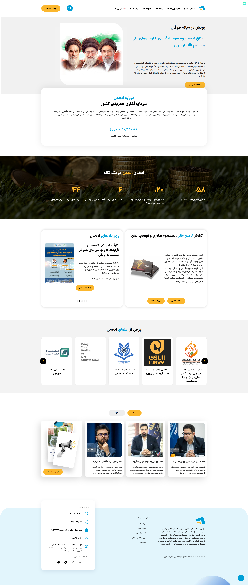

IRVC
توسعهی افزونهی اختصاصی وردپرس که کل دایرکتوری B2B شرکتهای IRVC رو میگردونه — از ثبتنام چندمرحلهای تا داشبورد self-service برای شرکتهای لیستشده.
مشاهده irvc.ir →
توسعهی افزونهی اختصاصی وردپرس که کل دایرکتوری B2B شرکتهای IRVC رو میگردونه — از ثبتنام چندمرحلهای تا داشبورد self-service برای شرکتهای لیستشده.
مشاهده irvc.ir →
زمینه
IRVC یک دایرکتوری B2B شرکتهاست که کسبوکارهای ایرانی رو به اکوسیستم گستردهتر متصل میکنه. محصول به دو چیز نیاز داشت: راهی برای ثبتنام و پرداخت شرکتها بدون دخالت ادمین، و راهی برای هر شرکت تا لیست خودش رو بعداً بهروز نگه داره. یک افزونهی اختصاصی وردپرس ساختم که هر دو رو پوشش میده — یک فلوی ثبتنام چندمرحلهای با پرداخت یکپارچه، بهعلاوهی یک داشبورد self-service که هر شرکت پروفایل خودش رو مدیریت میکنه.
افزونه ابزارهای نظارت ادمین هم در اختیار تیم IRVC میذاره. سایت عمومی رو هم در کنار افزونه طراحی کردم.
تکنولوژی